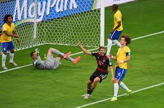
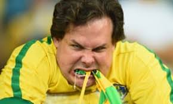

It was the World Cup semi-finals and I was watching it in a bar. I assumed that since we were in Missoula, MT of all places that the support would have been in favor of the Germans. I was extremely wrong. At least 60% of the crowd were cheering or Brazil.
The Brazil supporters were very loud and very intense compared to the muted neutrals and German supporters. Very few people were willing to cheer against the massive Brazilian element in the bar except for me and one or two others. We must have been the only true football people in the room because there was no doubt that Germany was better at this world cup.

With a German goal at 11 minutes into the game there was some huffing and puffing and swearing from the Brazilian fans. Then with a goal in the 23rd and 24th the huffing and puffing gave way to screaming and swearing.

In the 29th minute the mood changed dramatically. The Brazilian fans were totally deflated with the 5th goal, and many of them were shattered by the realization that they wouldn't be able to come back from this.They begin to ironically cheer when the German's scored a goal, and the anger was in the air. The Brazilian team were trying their best, but it was plain to see that Germany was just better today, and maybe if the game was played tomorrow or the day before Brazil might still have come out on top... because after all they are the best team in the world.
During half time the commentators hadn't totally given up on Brazil. Everyone in the world seemed to believe that they would pull it back becasue they are Brazil, but everyone seemed to think that Germany was going to win by maybe a goal or two.
The German fans were feeling pretty confident, but after the goal tally at the end of the first half the humanity of the fans started to pour out and again the German fans were muted and silent. Everyones eyes focused on the fans in yellow.
The Brazilian team was playing, but luck it didn't seem was going for them. The world was baffld by what was happening. Not even I had considered that much that quickly, and I was a firm believer in the German squad.
The next goal came in the 69th minute, but something strange happened. The Brazilian fans seemed to realize they were witnessing history, and they had calmed down a little bit. They clapped whole heartedly for Germany on that goal. The mood had totally changed. Somewhere along the way the Brazilian fans collectively realized that this was a moment where they were seeing something extraordinary.
The next goal came and now we were all in unison. Cheering on undeniable history. Football had totally changed, and the Samba, and Tiki Taka styles were now defeated by the gegenpress and systematic building from the German Football Association. This was ushering in the new era of Football. The era when a country like Iceland can now make the World Cup.
It was a shocking day, and a profound moment to witness. This is what Soviets must have looked like when Fischer defeated Spasky, or the Miracle on Ice happened, and I got to see it first hand. It was a deeply impressive moment of history to be involved with.